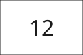

1.3.1
Alternative qui reprend le nombre affiché
Revu Conforme Pertinence
- Test
- 1.3.1
- Modalités
- html
- Relecture
- 22 octobre 2026
Motif
L'image affiche le nombre 12 et le texte de la page ne le répète pas. L'alternative « 12 places disponibles » reprend cette information. Le test 1.3.1, qui vérifie la pertinence d'une alternative déjà présente, est validé. Relecture sur la page du test le 22 octobre 2026.
Pièces visuelles

Cibles
imgImage qui affiche 12
Autres cas de ce test
- Revu Non conforme Alternative « image » pour un nombre
- Brouillon Verdict proposé, non applicable Page sans image porteuse d'information
Page minimale
Spécimen. La page jugée n’est pas modifiée.